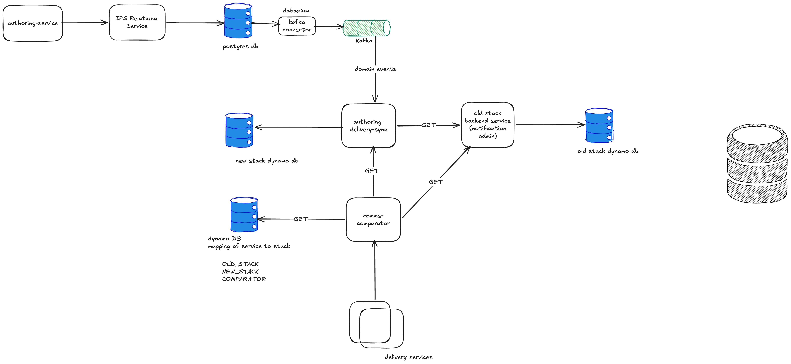

Status: ready
Decoupling a Mission-Critical Platform: Leading the Redesign of Notifications Authoring
Topic · Intuit · 13 months · Lead engineer
The architectural trap: two incompatible workloads in one system
In 2024, Intuit's Notifications Authoring Portal—used by teams at QuickBooks, TurboTax, Mailchimp, Credit Karma, and 10+ other products to configure Email, SMS, Voice, RCS, Push, and Tray notifications—was built with a fundamental mismatch that was invisible to casual observers but catastrophic at scale.
The setup: A single DynamoDB database stored a hierarchy of entities: Offerings (products) → Services (team groupings) → Notifications → Message Templates. Simple structure, single schema, one place to look. Seemed efficient.
The trap: The database was trying to satisfy two completely opposite workloads simultaneously.
Authoring (where teams build notifications) requires ACID transactions, complex joins across the hierarchy, flexible schema evolution. When a team adds a field—a description, a retry policy, a translation workflow—the database needs to absorb it without blocking other teams. This is a low-throughput system optimized for correctness.
Delivery (where notifications execute at 2,000+ TPS) requires the opposite: pre-computed, denormalized data with zero joins. At 2,000 TPS, a single join doubles latency. This is a high-throughput system optimized for speed.
Optimizing DynamoDB for authoring (flexible schema, complex queries) made delivery slower. Optimizing for delivery (flat denormalized data) made authoring fragile. The system was being pulled in two directions simultaneously, and every change in one direction broke something in the other.
The real cost: Changes to authoring schemas rippled into delivery and caused production incidents. Database maintenance (scaling, schema changes, table locks) on the authoring side threatened delivery SLA. Teams couldn't evolve independently. Each notification channel (voice, SMS, email, RCS, Push, Tray) had different field semantics and constraints, forcing schema compromises everywhere.
The system served 10,000 notifications across 800 services owned by 10+ teams. Downtime was unacceptable. A "rip and replace" rebuild wasn't an option.
Why this was genuinely hard
This wasn't a straightforward refactor. Every constraint made it harder.
Live traffic: QuickBooks, TurboTax, Mailchimp, and others were sending notifications to real customers through this system. A single incident was visible to end users and impacted revenue. We had zero margin for error during migration.
Data model complexity: Each notification channel had different field semantics. Voice notifications need timing config. SMS needs character limits and delivery windows. Email requires template rendering logic. RCS has interactive elements. Push has deep-link payloads. We couldn't migrate all channels the same way—each required deep understanding of its domain, then custom migration logic.
Scale: 10,000 notifications across 800 services. Coordinating migration across product teams meant predictable cutover dates, clear communication, and zero surprises. We couldn't move all notifications at once; teams needed to migrate at their own pace without fragmenting their experience.
Team ownership: Each service is owned by a single team. We couldn't have half a team's notifications on old stack and half on new. Migration had to be all-or-nothing per service. This meant fewer levers to pull: we couldn't just migrate "the simple notifications first"—we had to migrate entire services.
Team attrition during execution: A 13-month project means people leave. During this work, the team experienced layoffs (2 engineers), maternity leaves (1), and reassignments to higher-priority projects (1 engineer for 6 weeks). Without clear service ownership and self-contained migration phases, this would have derailed the project entirely. Instead, we structured work so that when someone left, their piece was understood and transferable.
Seasonal business load: Intuit has two major tax peaks (Feb–Apr and Aug–Oct). During peak, engineering capacity is completely consumed by stability and bug fixes. We had to work around those windows and couldn't afford cutover surprises during peak load.
The solution: two independent systems with one-way sync
Rather than optimize DynamoDB for both workloads, I proposed accepting that they were fundamentally different and splitting them entirely. Two independent systems, optimized separately, kept in sync via events.
- Authoring system: IPS Relational (managed PostgreSQL). Normalized schema, ACID transactions, complex queries, git-tracked schema changes. Teams build notifications here.
- Delivery system: DynamoDB. Denormalized, high-scale reads, optimized for 2,000+ TPS. Runtime pulls data here.
- Sync mechanism: Domain events (Kafka). When authoring data changes, an event publishes. A consumer reads events, transforms the data (normalized → denormalized), and persists to DynamoDB. Async, one-way, simple.
This decoupling meant authoring and delivery could evolve independently. Delivery could optimize for latency without constraining authoring. Authoring could add fields without breaking delivery. The two domains grew apart—as they should.
Why IPS Relational, not Aurora or self-managed Postgres
This decision shows the staff-level thinking. Not "pick a database that works" but "what's the total cost of ownership and what does the company already have?"
Operational burden: IPS Relational (Intuit's managed relational database) handles upgrades, scaling, secret rotation, failover. We don't operate it. The team that does has deep expertise and has battle-tested this at Intuit scale.
Governance and audit: Every schema change goes through git. There's an audit trail: who changed what, when, why. The IPS team reviews changes and suggests best practices. This matters at Intuit scale. It's not just technical—it's compliance, accountability, and institutional knowledge.
Ecosystem integration: IPS Relational has built-in domain events (Kafka publishing on schema changes). We didn't have to invent the sync mechanism. And IPS Search (Elasticsearch) auto-indexes configured views—we didn't have to glue services together manually. We leveraged what the company already built.
Building our own Aurora cluster would have been simpler short-term but would have meant: operating the database, managing secrets ourselves, missing ecosystem integrations, reinventing domain events. The managed platform wins long-term.
The four services I own
- comms-authoring-service: REST API for teams to build notifications. Backed by IPS Relational. Handles authoring concerns: validation, scheduling, templates, access control, preview, translation.
- authoring-delivery-sync: Consumes domain events from Kafka (published by IPS Relational on schema changes). Transforms normalized → denormalized schema. Writes to DynamoDB. Async, so if it falls behind, it catches up without blocking writes.
- comms-comparator: The migration router. All read requests flow through comparator. It checks a per-service migration flag and routes to old stack, new stack, or both (for parity validation). During migration, comparator was the only way to run both systems simultaneously without doubling load.
- comms-promotion-service: Promotes authored notifications (and their templates, configs, datasets) from staging to production. Gated by access control (who can promote), audit trails (who/when/what), and blast-radius API (what else does this promotion touch?).
How comparator prevented a bottleneck at 2,000 TPS
All traffic routed through comparator, but it didn't create a bottleneck. Here's why.
Comparator was a router, not a proxy. Most requests went to a single backend: OLD mode → old stack (1 call), NEW mode → new stack (1 call), COMPARATOR mode (validation only) → both (2 calls, but tiny fraction). The key: COMPARATOR mode was never the majority. Load naturally distributed based on each service's migration state.
The old stack was fully scaled initially—it was already handling all 2,000+ TPS. As services migrated, the new stack scaled up and old stack scaled down. Comparator stayed lightweight. Load balanced naturally.

Key decisions that shaped execution
Migrate per-service, not per-notification or per-tenant
In the Notifications hierarchy, a "service" is a logical grouping owned by one team. I decided to migrate service-by-service, treating each as an atomic unit.
Why not per-notification? If I migrated notification-by-notification, a team using SMS + Email could have SMS on new stack and Email on old. That fragmented their experience. New authoring UI for one channel, old for another. Confusing, operationally messy.
Why not per-tenant? Too coarse. A tenant might own 50 services; moving all 50 at once had massive blast radius.
Why per-service? Services align to team ownership. Each service has predictable traffic. Each team gets one migration date. Clear communication, clear cutover, clear rollback scope. If something breaks, we roll back one service and investigate. The optics matter: from the team's perspective, they moved from "using old Authoring Portal" to "using new Authoring Portal" as one coherent unit.
Channel-by-channel rollout with a service-readiness gate
Six channels: Voice, SMS, Email, RCS, Push, Tray. Each had different data models.
I didn't migrate all channels simultaneously. I prioritized by simplicity: Voice first (fewest nuances), SMS next, Email (most complex). Early wins, manageable blast radius, learning between phases.
But I added a constraint: a service won't migrate until ALL of its channels are ready. If a service uses SMS + Email, it waits until both channels are built and validated in the new system. This prevented partial migrations and gave teams clear prerequisites.
The benefit: load scaled incrementally (Voice migrations happened first, consumed fewer services). Teams saw clear readiness signals ("your service is ready to migrate once Email channel is live"). No surprises.
Comparator at the API boundary: zero product-team visibility
Product teams call Notifications APIs to read configurations. I placed comparator between them and the backend.
From their perspective, the API never changed. They hit one endpoint; comparator handled routing. If a service was in OLD mode, they hit old stack. If NEW mode, new stack. If COMPARATOR mode, both (and they got validated responses). Their contract was stable.
This meant zero communication overhead with product teams. No "your service is migrating on Date X, here's what breaks." No migration surprises. No breaking changes. They saw one API; we managed complexity internally. This is the kind of API design that keeps organizations aligned.
Domain events, not dual-write
When authoring data changes, how does delivery data stay in sync?
Option 1 (dual-write): Every write to authoring DB also writes to delivery DB. Simple to reason about (both systems always in sync). But authoring DB load doubles. Authoring DB has to speak delivery schema (it didn't). Write latency increases. Partial failure handling becomes messy.
Option 2 (event-driven): IPS Relational publishes domain events to Kafka on schema changes. Consumer reads events, transforms (normalized → denormalized), writes to DynamoDB. Sync is async. Authoring DB never knows about delivery. If consumer falls behind temporarily, it catches up asynchronously without blocking writers.
Tradeoff: Eventual consistency instead of instant. But the gap is milliseconds (consumer processes events quickly), and the benefit is huge: authoring DB stays lightweight; delivery DB gets exactly what it needs; the two systems are truly independent.
Per-channel data modeling: no generic schema
Voice notifications have duration. SMS has character limits and delivery windows. Email has formatting rules. RCS has interaction options. Push has deep-link payloads.
I could have created a generic schema (all channels use the same fields, nulls where they don't apply). Simpler database perspective. But queries get more complex (filtering nulls), validations harder (what applies to this channel?), and the schema becomes a compromise that optimizes for nothing.
Instead, I modeled each channel properly. Voice has fields optimized for voice. SMS for SMS. Means more per-channel migration logic upfront, but the payoff: queries are clean, validations are channel-specific, the schema is tight. Every layer of the system gets simpler.
This decision made data model migration the longest phase of the project (months 5–10). We had to deeply understand each channel's semantics, design the new relational schema, write migration logic, test against live data, validate parity. It was the right investment.
Comparator visibility: logging and parity audits
During migration, comparator ran in validation mode for some requests: call both old and new stack, compare responses, log divergences. This gave us confidence that the new system matched the old.
7-day parity audit during peak migration:
- 2.9M+ matching responses (the happy path)
- ~400 divergences (all root-caused: 363 stale template IDs, 7 templates not yet promoted, 30 event names with special characters)
We added a custom alert: "Communication Details call succeeded in comparator but failed in old stack." This caught the dangerous pattern (new stack works, old stack breaks, users still on old stack see silent failures). Visibility prevented silent failures.
Executing through organizational chaos
Total timeline: 13 months. Active work: 10 months.
Month 1 (Design & alignment): Everyone had different approaches. Platform team, IPS team, delivery team, product teams—all had opinions. First month was spent converging. We reviewed options (dual-write, cache layer, event-driven sync), evaluated tradeoffs, and committed to the per-service, domain-event-driven approach. Hardest part was alignment: different teams had different priorities and constraints.
Months 2–4 (Infrastructure): Built four services. Set up domain events with IPS team (they enabled Kafka publishing on schema changes). Built comparator and promotion services. Each service had to handle migration concerns (safe routing, parity validation). This phase had concrete deliverables; progress was visible.
Months 5–10 (Data model migration—the long pole): Each channel required deep understanding. Voice (simplest—pure timing config) → SMS (character limits, complex templates) → Email (WYSIWYG rendering, complex template logic). For each, we designed the new relational schema, wrote migration logic, tested against live data, validated parity.
During these months, we also migrated services incrementally. Voice services started moving. SMS services waited for SMS to be ready. We set up monitoring for each service's performance on the new stack. We built runbooks for rolling back (how do you move a service back if something breaks?). The incremental approach meant we caught problems early and learned with each phase.
Attrition challenge: During these 10 months, we lost people. Layoffs (2), maternity leaves (1), reassignments (1 for 6 weeks). Without clear service ownership and self-contained migration phases, this would have derailed everything. Instead, we structured work so each person owned one service or one phase. When someone left, their piece was understood and transferable. New people onboarded into that role. The architecture and phase structure made attrition manageable.
Seasonal load challenge: Tax peaks (Feb–Apr, Aug–Oct) squeezed capacity. During peak, team focused on stability, not migrations. We scheduled major cutover windows for off-peak months (May–Jul, Nov–Jan). Critical path work (comparator validation, promotion testing) finished before peak hit. We didn't attempt large migrations during peak. This discipline prevented pressure-induced mistakes.
Scale: 10,000 notifications across 800 services. We didn't move all at once. Channel-by-channel, then service-by-service within each channel. Blast radius was always bounded. If something broke during a service's migration, we rolled back that service, investigated, and moved on.
Impact: operational decoupling and sustainable scale
10,000 notifications, 800 services, 10+ product teams migrated with zero downtime and zero visible customer impact. Product teams never knew it happened. API contracts remained unchanged. Comparator handled all routing internally. No team coordinated. No team saw surprises. No team saw regressions. This is the mark of a clean architecture—migration is internal detail.
Parity validation: 99.987% match rate. 2.9M+ matched responses, ~400 divergences—all root-caused to known categories. This confidence meant we could move services without fear.
Comparator handled 2,000+ TPS without bottlenecking. Lightweight routing, gradual capacity rebalancing, most traffic in single-stack mode. Load scaled naturally.
Operational decoupling established. Authoring and delivery teams now make independent decisions. Delivery can scale without touching authoring schema. Authoring can add fields without breaking delivery. The two domains evolved separately from this point forward—no more cascading failures.
New patterns for the organization. Per-service migration became the template for large-scale platform work. Domain event-driven sync became standard. The comparator pattern (validation during cutover) became reusable for other migrations. Teams learned to think about migration safety, not just functionality. The organization's maturity increased.
Sustainable foundation for future work. The decoupled architecture means teams can now add features to authoring (new channels, new workflows, new validation rules) without fearing delivery impact. Delivery can scale independently. The organization can grow without rebuilding again.